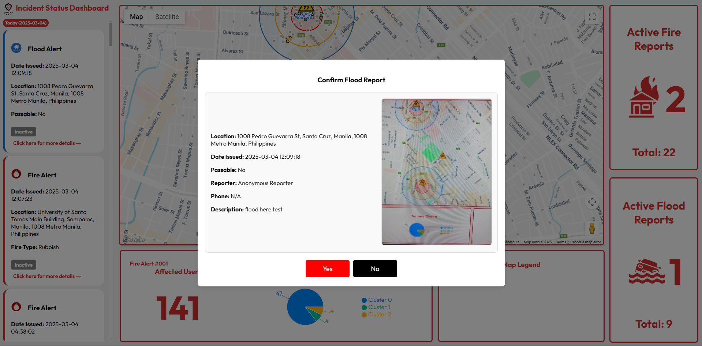

LigtasMax: Disaster Assistance System
A mobile and web application to enhance disaster response in Manila City using geofencing, spatial clustering, and real-time alerts.

A mobile and web application to enhance disaster response in Manila City using geofencing, spatial clustering, and real-time alerts.